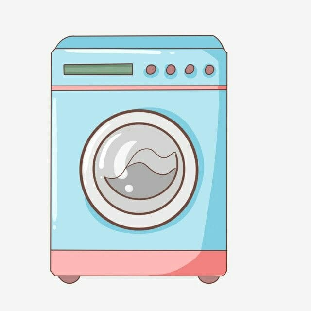
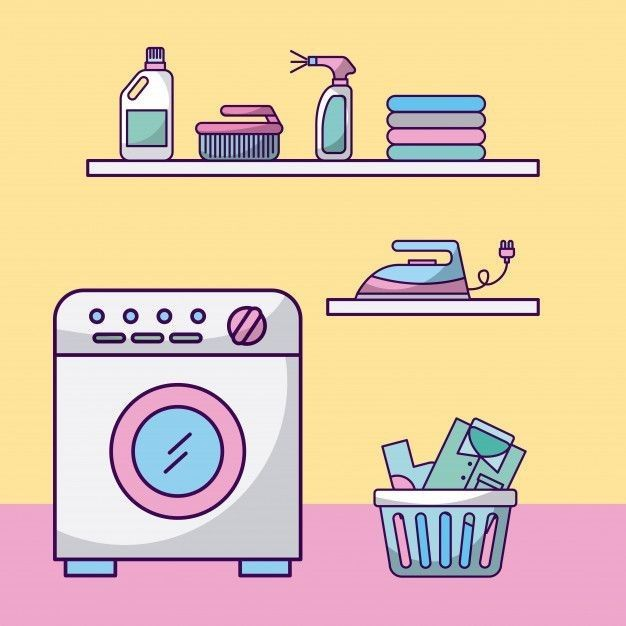
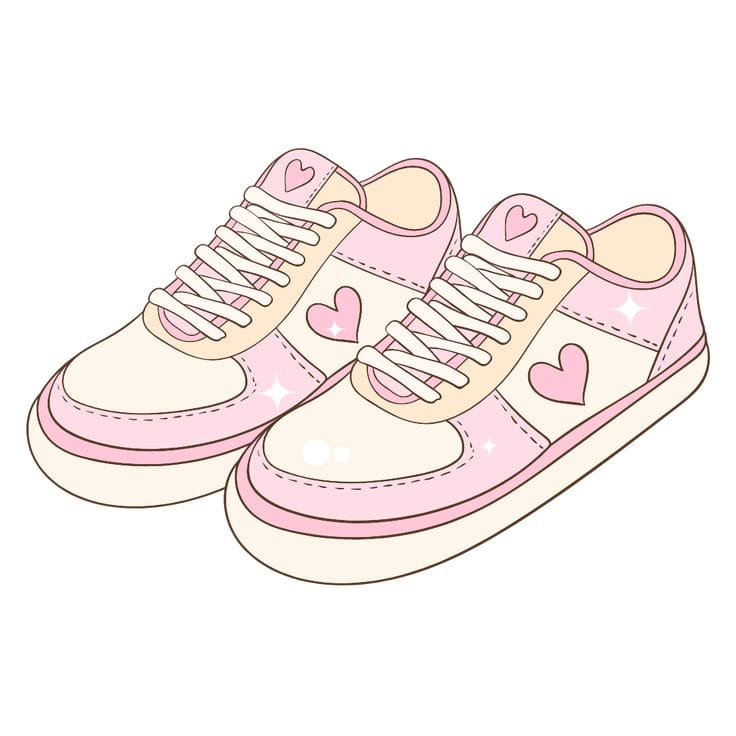

Cuci Kiloan
Cuci, kering, dan lipat rapi. Cocok untuk pakaian harian keluarga.
AyyLaundry siap mencuci pakaian Anda dengan harga bersahabat dan hasil yang selalu segar.
Lihat Layanan Hubungi KamiAyyLaundry adalah usaha laundry rumahan yang melayani cuci kiloan, setrika, hingga cuci sepatu dan bedcover. Pakaian ditangani satu per satu dengan deterjen yang aman untuk kulit, lalu diantar kembali tepat waktu.
Tiga layanan yang paling sering dipilih pelanggan kami.

Cuci, kering, dan lipat rapi. Cocok untuk pakaian harian keluarga.

Butuh cepat? Pakaian selesai dalam 6 jam dan siap diambil atau diantar.

Sepatu kotor kembali bersih dan wangi tanpa merusak bahan.